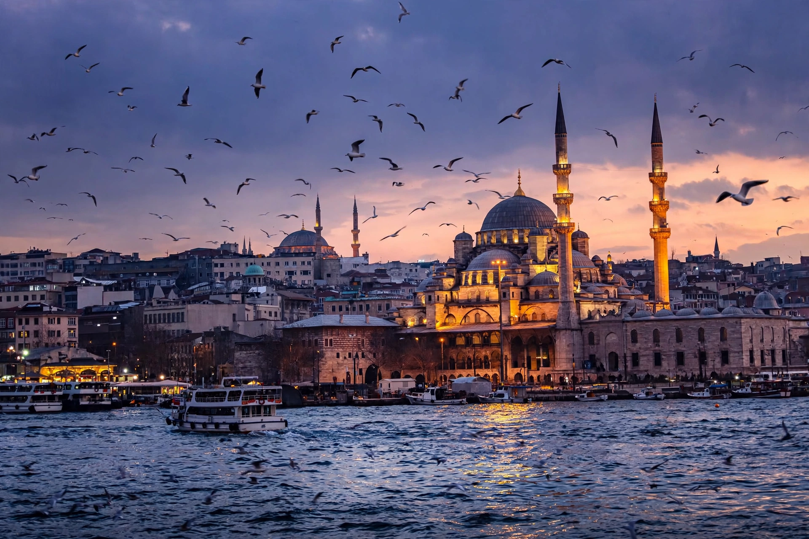

New Mosque, Istanbul
The New Mosque (Turkish: Yeni Cami), originally named the Valide Sultan Mosque (Turkish: Valide Sultan Camii), is an Ottoman imperial mosque located in the Eminönü quarter of Istanbul, Turkey, at the southern end of the Galata Bridge on the Golden Horn. It was commissioned by Safiye Sultan, wife of Murad III and mother of Mehmed III, begun in 1597, and after a long interruption completed in 1665 under Turhan Sultan, mother of Mehmed IV. Despite its name it was among the last of the great classical Ottoman mosque complexes.

| New Mosque | |
|---|---|
| Location | Eminönü, Istanbul, Turkey |
| Affiliation | Islam |
| Construction | 1597–1665 |
| Patron | Safiye Sultan; completed by Turhan Sultan |
| Style | Classical Ottoman |
| Minarets | 2 |
History
Construction began in 1597 to designs of the court architect Davut Ağa, a pupil of Sinan, on a site in the city's Jewish quarter; after Safiye Sultan's fall from power in 1603 work stopped for more than half a century, and the unfinished structure was damaged by the great fire of 1660. Turhan Sultan, as regent for Mehmed IV, resumed the project as an act of piety; the mosque was finished in 1665 with its royal pavilion, mausoleum, primary school, fountain and the adjacent Egyptian (Spice) Bazaar, whose rents supported the complex.
Architecture
The mosque follows the classical Ottoman plan with a large central dome flanked by four half-domes in a pyramidal cascade of smaller domes and semi-domes, and two slender pencil minarets. The interior is richly decorated with İznik tilework, mother-of-pearl inlay and painted decoration. The L-shaped Egyptian Bazaar and the türbe, containing the tombs of Turhan Sultan and several later sultans, form part of the külliye (complex).